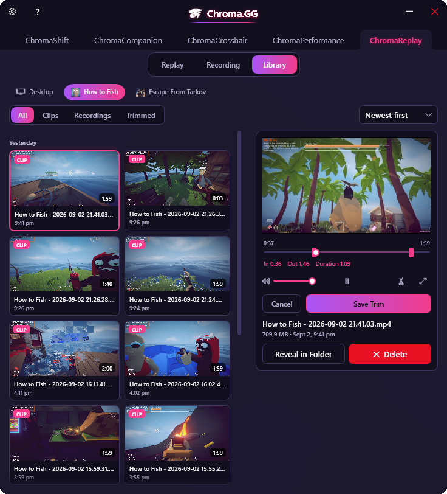
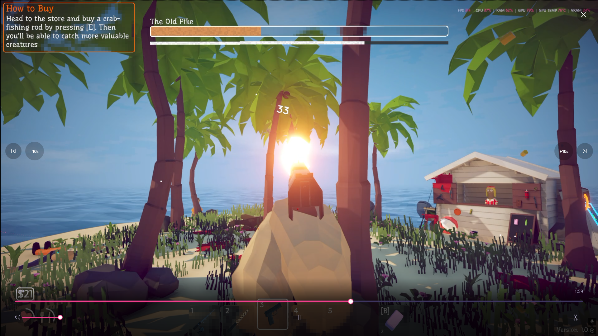

Darren Robson
 Chroma.GG
Chroma.GG
A Windows tray app that automatically applies per-game display tuning and adds a suite of companion gaming utilities, all running quietly in the background and switching the instant you alt-tab into a game.
Detects the focused window in real time and applies a saved Gamma / Contrast / Brightness / Digital Vibrance profile the moment you switch into a game, reverting the instant you switch out. Built directly on NVAPI (nvapi64.dll), so changes apply at the display-output level, not through a software overlay.
SetWinEventHook, not polling, so it's instant and idle-cost-free.Launch or close bundles of supporting apps, like Discord or voice comms, alongside a game. Chroma.GG also auto-discovers your installed games via Steam and Epic library scans, plus a general installed-apps index, so there's little manual setup.
This is an illustrative demo of the app-group lifecycle: launch the main app and its bound companions start with it; close it and Chroma.GG closes them too, so nothing keeps eating CPU, RAM or GPU cycles in the background.
A click-through crosshair overlay, drawn per-profile so each game can keep its own shape and color.
FPS, frametime and hardware stats pulled from RTSS shared memory, shown in a draggable in-game HUD you can position anywhere on screen.
Drag the HUD anywhere on screen, same as in the app.
A rolling replay buffer plus one-key clip and screenshot capture, entirely on the GPU: DXGI Desktop Duplication feeds NVENC hardware encoding, with WASAPI loopback audio muxed in via Media Foundation. An optional "match display profile" mode re-applies your color adjustments to captured footage, since NVIDIA's display-level Gamma/Vibrance doesn't otherwise show up in raw captures.
Illustrative: pressing the clip hotkey saves the last few minutes of gameplay instantly, with a quick on-screen confirmation.
The Library tab lists every recorded clip and screenshot, auto-scanned from the output folder with thumbnails cached for fast browsing, and searchable and filterable by game.
The Quick Adjust HUD's gallery surfaces your four most recent clips directly in the overlay, with one click jumping straight to that clip in the Library.


Code-behind architecture, no MVVM framework. x64-only, since NVAPI ships only as a 64-bit DLL. Focus tracking runs on SetWinEventHook, hotkeys on raw Win32, and theme reloads on FileSystemWatcher, keeping the whole app event-driven rather than polling in a loop. Capture pipeline: DXGI Desktop Duplication into NVENC hardware encoding, muxed with WASAPI loopback audio via Media Foundation.
Chroma.GG is actively in development. Reach out if you'd like a walkthrough, early access, or to talk through how it's built.
Get in touch